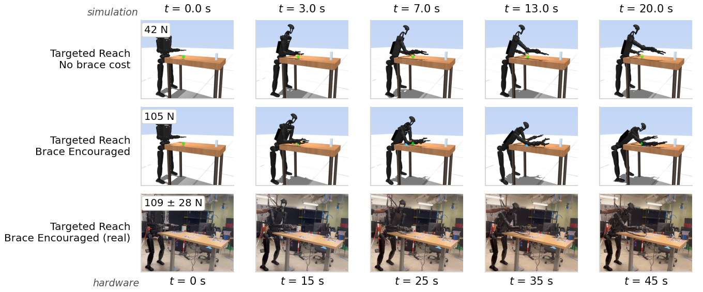
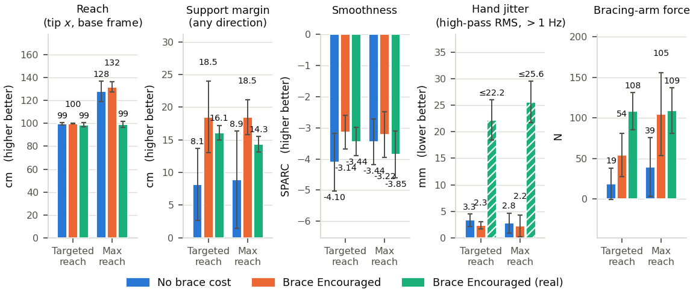
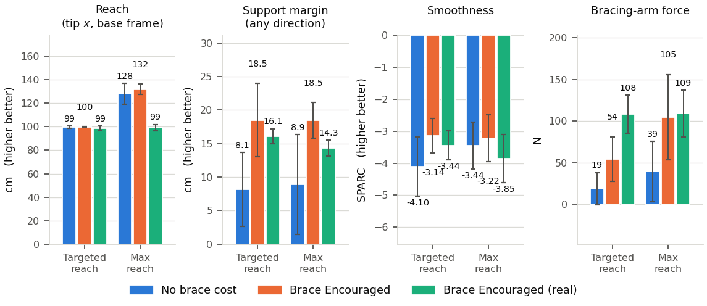

A film strip pairing the sim's targeted reach with Allen's, and the frame error it exposed: hand_x_settled is world x, his reach is base x, and the two differ by exactly the sim's own base offset — so the mismatch has been reading as agreement. Plus the jitter metric, re-cut to his definition.

maxreach exemplars chosen by measured bracing-arm load, trunk rests excluded; the hardware row is five frames from Allen's clip. Columns are phase-aligned, not time-aligned — the sim clock runs along the top and the hardware clock along the bottom, and they are not the same 20 s.Two things about how this figure is built. The sim rows are the max-reach condition even though both rows are labelled "Targeted Reach", because on hardware those are the same experiment: Allen ran one target and the robot stretched to it. In sim they are two conditions, and it is the max-reach rollouts that look like the hardware trial. That is the result, not a labelling slip.
And the force annotations are bracing-arm load in all three rows, not
the six-row strip's brace_load_N. The latter counts every non-foot
contact, so it also charges the reaching hand resting on the slab; quoting it
against a hardware number that is the bracing arm alone compares two different
quantities. On the same exemplar it is the difference between 157 N and
105 N — against the hardware's 109 ± 28 N.
At t = 0 the sim robot is already at the table and the real one is visibly off it. That turns out to be recoverable to the centimetre from numbers already in the repo.
The target reconciliation in brace_vs_stand.py pinned the
table: Allen gives his target as 0.55 m from the table's near corner and
plots it at x = 0.998, so in his frame the slab's near edge is at 0.448 m
— against the sim's 0.450 m. Two millimetres. Run it one step further and
it pins the robot, because his trace is in the robot's base frame:
| base → table edge | evidence | |
|---|---|---|
| Hardware | 0.448 m | 0.998 − 0.55, base-frame trace |
| Simulation | 0.260 m | table edge 0.450, ankles 0.190 (world) |
| Difference | 0.188 m | = the sim's own base offset, 0.190 m |
The z read corroborates the frame: 1.163 against a table surface at 0.985 is measured from the floor, not from a pelvis at 1.028 — so his frame is base-in-xy, floor-in-z, and an x origin sitting 0.448 m from the table is the robot rather than an arbitrary room corner.
This is not circular, because the reach numbers close it independently. Both robots put the hand on the same table point, so their own-frame reaches must differ by the standoff — and they do, exactly:
sim tip, settled, at the hardware target 99.5 cm world = 79.8 cm from its own ankles
Allen's "functional reach" 98.8 +- 1.7 cm from his base
-------------------------
19.0 cm
The first consequence reverses the section below. Allen's datum sits 44.8 cm
behind the table edge and the sim world origin sits 45.0 cm behind it —
they coincide to 2 mm. So hand_x_settled and his base-frame
reach are directly comparable and the Reach panel needs no rescaling. What
it states is a table-frame quantity, "how far onto the slab did the hand
get", not a robot-frame one.
The second consequence is the robot-frame reading. In the ankle frame this
study uses for func_reach_settled, his 98.8 cm becomes
~91.0 cm:
| Settled reach, from the ankle midpoint | No brace cost | Brace Encouraged | Hardware |
|---|---|---|---|
| Targeted reach | 79.8 cm | 80.4 cm | ~91.0 cm |
| Max reach | 109.5 cm | 115.9 cm | ~91.3 cm |
So at the shared target the real robot reaches 11 cm further from its own ankles — it has to, it is standing 11 cm back — and at max reach the sim over-reaches by 18–25 cm rather than the 29–33 cm the table-frame numbers show. The over-reach is real and the standoff explains about a third of it.
| Reach, from the robot's own base | No brace cost | Brace Encouraged | Hardware |
|---|---|---|---|
| Targeted reach | 79.8 cm | 80.4 cm | 98.8 ± 1.7 cm |
| Max reach | 109.5 cm | 115.9 cm | 99.1 ± 2.7 cm |
So the published pair — perfect agreement at the target, 29 cm apart at max reach — is two frame errors rather than two results. At the target the real robot reaches 19 cm further from its own base than the sim does, because it has to; at max reach the sim is ahead by 10–17 cm, not 29–33. It also explains the strip: starting 19 cm closer, the sim's max-reach posture is what the hardware's targeted reach looks like, which is exactly why those two rows are paired.
The y axis is the same class of finding on the other axis — the earlier reconciliation already put the real table ~10 cm further +y relative to the robot. Taken together the real robot stands about 19 cm further back and 10 cm off in y from where this study places it.
target_position.png is
plotted in. ~0 confirms it; anything else and his trace is a room frame and the
standoff is unmeasured. The AprilTag logs answer it too — a tag-to-base
transform at t = 0 puts the table's near edge in the base frame directly,
which is the standoff. The sim start pose is a published condition and moving
it re-costs every rollout in the study, so it stays where it is until that lands.His metric is the high-pass RMS of hand motion over the braced hold — √(mean ‖x(t) − x̄(t)‖²) in mm, counting tremor above ≈1 Hz, over a window from 3 s after brace onset to 1 s before recovery. Since x̄(t) is a function of t, x − x̄ is the high-passed signal and the formula is just its RMS: a 2nd-order zero-phase Butterworth at 1 Hz, filtered over the whole trace and windowed afterwards so the edge transient stays out.
| New: HP RMS >1 Hz | Old: last-40% MAD | Hardware | |
|---|---|---|---|
| Targeted, no brace | 3.3 ± 1.2 mm | 10.8 mm | — |
| Targeted, brace | 2.3 ± 0.7 mm | 6.2 mm | 22.2 ± 3.8 mm |
| Max, no brace | 2.8 ± 1.9 mm | 19.7 mm | — |
| Max, brace | 2.2 ± 2.0 mm | 18.0 mm | 25.6 ± 3.9 mm |
Two things fall out. Coverage went from 23% to 100% of rollouts, because a high-pass is drift-immune and a run no longer has to reach a steady hold to be measurable. And the sim shows no braced-vs-unbraced separation at either pose — which is the panel's whole reason for being in a brace-vs-stand figure. The old metric's apparent 19.7-vs-18.0 mm brace effect at max reach was a difference in drift, not in jitter.


Window caveat: Allen's is ~60 s, these are 7–14 s targeted and only 2–6 s at max reach, because the unbraced hand does not arrive until t = 15 s of a 20 s rollout. High-pass RMS is stationary, so that is noise rather than bias — but longer rollouts are the fix if the max-reach spread wants tightening.
Setting the standoff aside and assuming the offsets are right, the other
candidate is that the hardware is not reach-limited but envelope-limited:
h1_real_controller.launch.py starts h12_safety_layer with
relax_safety_split.yaml, which latches an e-stop on the first
lowstate sample outside its limits and then publishes mode 0 with
kp = kd = 0. A sim posture that trips it is a posture hardware could not
hold. studies/estop_replay.py replays every rollout through the real
check — the limit arrays come from the safety layer's own
load_config, and the three sim analogues of q,
dq, tau_est are joint position, joint velocity and
data.actuator_force.
| Channel | Peak, worst condition | Verdict |
|---|---|---|
| Velocity | 0.22 × the trip level (left shoulder pitch) | nowhere near |
| Torque | 0.81 × (right ankle pitch) | structurally unreachable |
| Position | 8 mrad = 0.46° past the knee stop | solver softness |
The torque row is the strong one: every MJCF forcerange is
0.18–0.90× its safety-layer torque limit, so a torque trip is
impossible in this sim by construction — not merely unobserved. And the
inversion matters. In the max-reach condition the sim is pinned at its
modelled torque ceiling for a good part of the episode (left elbow 39%,
right ankle pitch 35%, left wrist pitch 31%), and those ceilings are the tight
ones: 13 N·m at the elbow where the safety layer allows 18, 9 at the wrist
where it allows 19. The sim reaches 129 cm while modelled weaker than the
real robot is permitted to be, so torque capability cannot be what holds
hardware to 99 cm.
estop.position_offset
is 0.0001 rad — zero tolerance against the URDF stop — and this
robot stands with its knees parked on the hyperextension stop: the knee is
within 5 mrad of its limit for 34–67% of every episode. In sim the
overshoot is MuJoCo's soft constraint and means nothing. On hardware the same
posture puts two joints on a stop with no margin in the trip band, so whether the
run survives is a question about encoder noise and zero calibration. Worth raising
with whoever runs the robot; it is unrelated to how far the arm gets.| Settled tip x | All upright | Arm-braced only |
|---|---|---|
| Targeted, no brace | 99.5 ± 0.6 cm (n=8) | 99.5 ± 0.6 (n=8) |
| Targeted, brace | 99.6 ± 0.4 (n=16) | 99.9 ± 0.2 (n=4) |
| Max, no brace | 129.2 ± 6.3 (n=16) | 128.0 ± 4.3 (n=15) |
| Max, brace | 139.8 ± 7.2 (n=16) | 131.9 ± 3.2 (n=6) |
Two corrections here. The max-reach condition is an order of magnitude noisier
than the targeted one (SD 3–7 cm against 0.2–0.6) because its target sits at
x = 1.60, outside anything the robot can touch, so the Reach
residual never saturates and each rollout simply stretches as far as its own
sampling got — that spread is the planner, not the posture. And the
commanded-brace column only looks like the noisier of the two while the trunk
rests are in it (7.2 vs 6.3); among rollouts that braced with the arm they were
told to use it is the tighter one, 3.2 against 4.3. The extra variance is
the Trunk Clear exploit showing up as spread.
export LEAN_TASK_DIR=$STAGE_ROOT/mjpc/tasks/humanoid_bench/lean # see below cd studies python3 bvs_strip_real.py \ --json runs/2026-08-22_brace_vs_stand/analysis.json \ --run runs/2026-08-22_brace_vs_stand \ --frames ../paper/figures/brace_reach/allen_real_experiments/five_frames_strip \ --out ../paper/figures/brace_reach/allen_real_experiments python3 estop_replay.py --run runs/2026-08-22_brace_vs_stand
LEAN_TASK_DIR is now mandatory for the study
scripts. simple_lean.py falls back to
crocoddyl_mpc/build/mjpc/tasks/..., which is the pre-split layout and
no longer exists; the MJPC build tree lives at
mujoco_mpc/build_cmake/. The failure mode is a ParseXML
error on every rollout and "0 rollouts updated" — loud, but only if you read
past the first line.